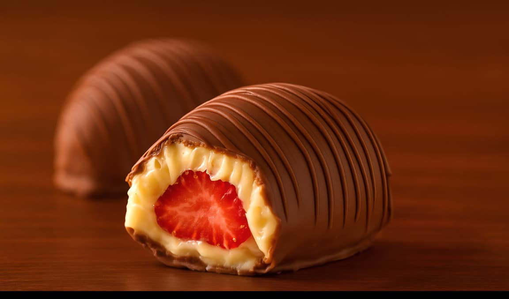

Cardápio
-

Pao de Mel Tradicional
O clássico que nunca sai de moda! Massa fofinha e úmida de especiarias, recheada com doce de leite cremoso e coberta por uma camada generosa de chocolate. Um pedaço de carinho em cada mordida.
-

Pao de Mel Nuttela c/ morango
A combinação irresistível! Recheio de creme de morango fresco com a cremosidade única da Nutella, envolto no pão de mel macio e finalizado com chocolate ao leite. Um sabor surpreendente e apaixonante.
-

Pao de Mel Beijinho
Para quem ama coco, esse é o queridinho! Recheado com beijinho caseiro cremoso, equilibrando a doçura com a cobertura de chocolate que derrete na boca. Um verdadeiro pedaço de festa em cada pedacinho.
-
Torta Holandesa
Uma combinação irresistível de cremosidade e crocância! Base amanteigada, recheio suave de creme gelado e cobertura de ganache de chocolate meio amargo, finalizada com biscoitos que dão aquele toque clássico e elegante.
-

Bombom de Morango
O doce que conquista corações! Morango fresco envolto em um creme de leite condensado e coberto com uma camada generosa de chocolate ao leite. Uma explosão de sabor em cada mordida.
-
Tortinha de Morango
Delicada e deliciosa! Massa crocante, recheio leve de creme branco e cobertura de morangos frescos com brilho especial. Um docinho que é puro encanto e frescor.